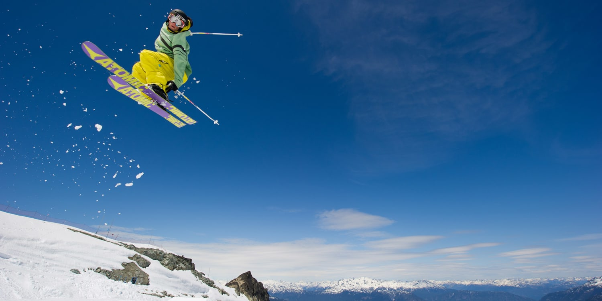
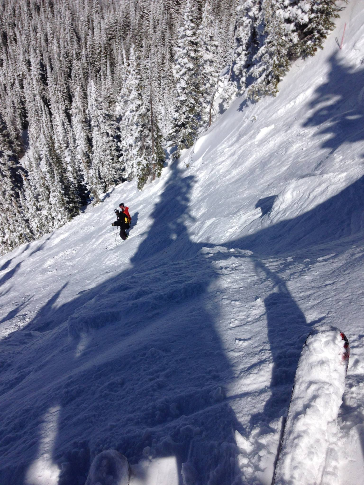

Skiing is one of my favorite activites to do in my free time, although it's hard to do in South Carolina. Because I grew up in Colorado, I started skiing at age 2. Now my family spends every Christmas in the mountains skiing daily. Skiing can be difficult especially when you are dealing with the cold and sometimes complicated gear. However, once you get the hang of it, it can be so much fun!
In order to ski safely, you need skis, compatible boots, a helmet, goggles, and warm ski clothing. It might sound like a lot, but it comes in handy if you ever fall, which I do often. My family likes to make fun of me because I can be an daredevil when it comes to skiing and attempt courses or jumps that I'm not always capable of. It is good to be properly prepared so you can try as many different runs as you want, like moguls which are my favorite.
| Symbol | Difficulty Level | Description |
|---|---|---|
| Green Circle | Beginner | Wide and Groomed, minimal slope |
| Blue Square | Intermediate | Slightly steeper slope, groomed |
| Black Diamond | Expert/Advanced | Steep slope, not groomed, can be thin run |
| Double Black Diamond | Highly Advanced/Expert Skier | Extremely steep, difficult conditions and obstacles |

